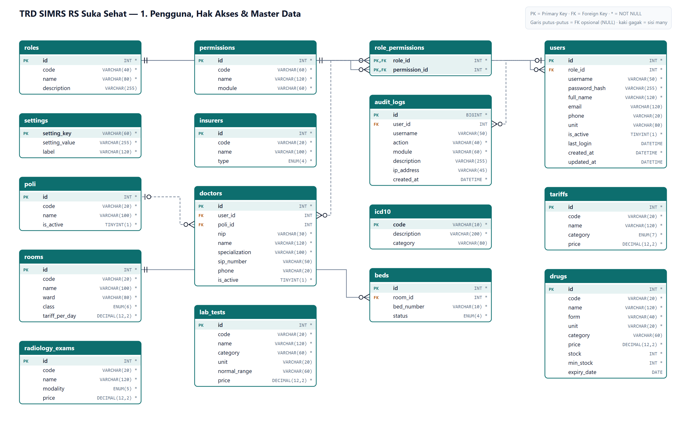
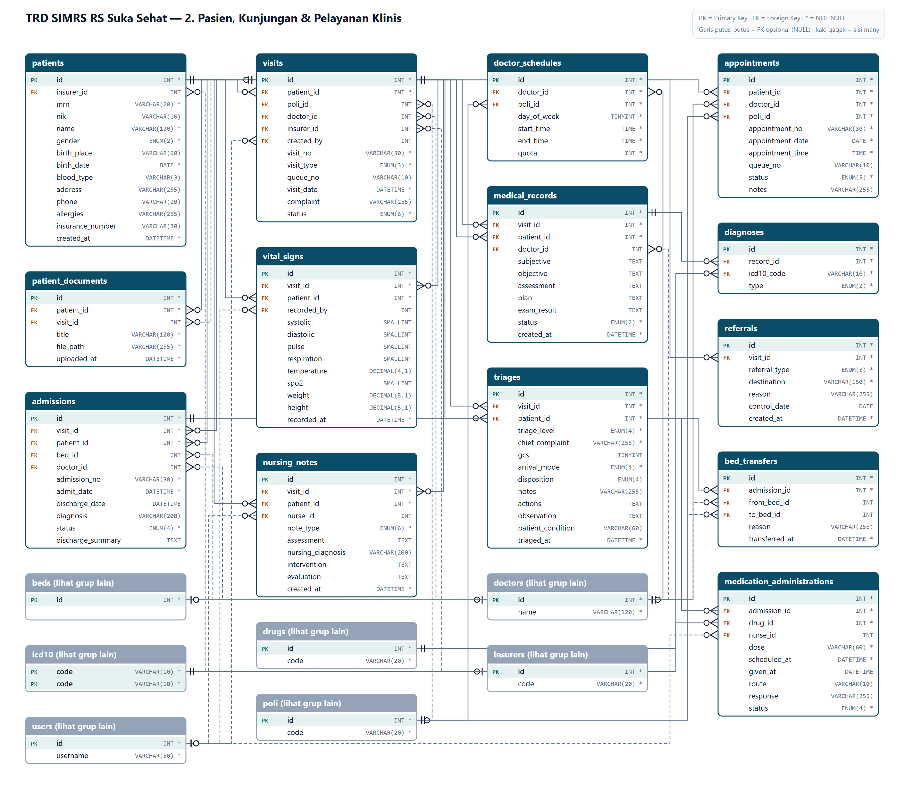
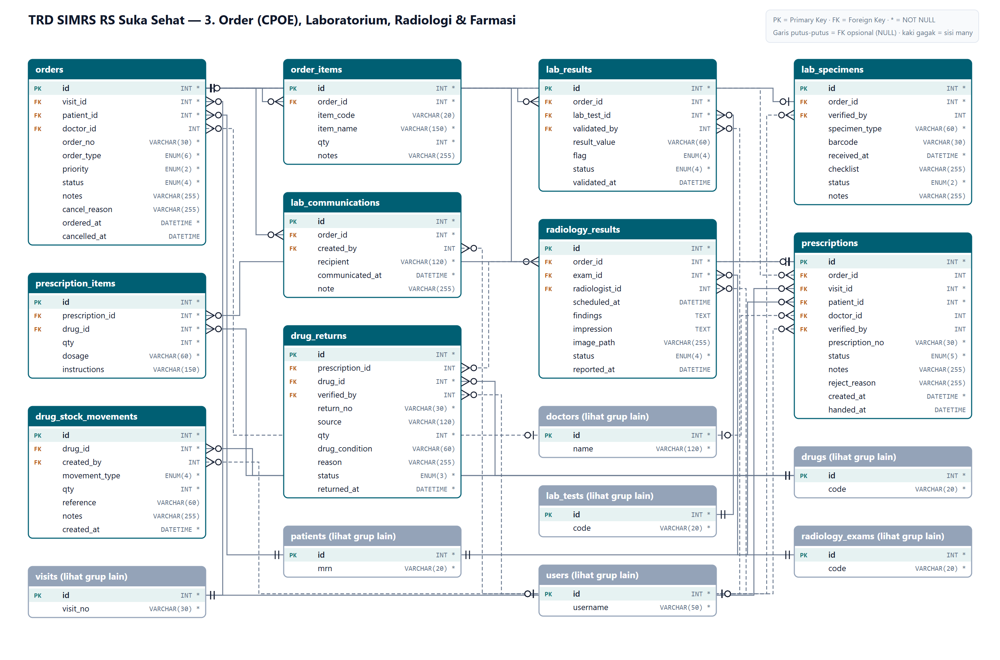
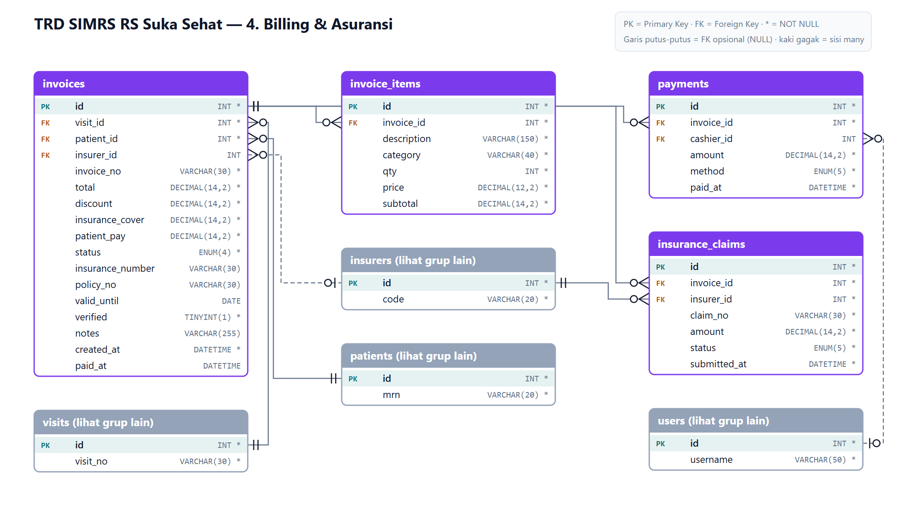
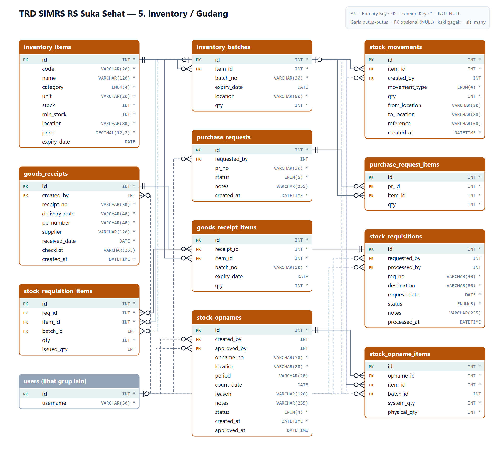

Database simrs_suka_sehat · 55 tabel · 97 relasi foreign key · dihasilkan dari database/simrs_suka_sehat.sql

Daftar peran pengguna (RBAC).
| Kolom | Tipe Data | Null | Kunci | Default / Relasi |
|---|---|---|---|---|
| id | INT | Tidak | PK | AUTO_INCREMENT |
| code | VARCHAR(40) | Tidak | UQ | |
| name | VARCHAR(80) | Tidak | ||
| description | VARCHAR(255) | Ya |
Daftar hak akses per modul/fitur.
| Kolom | Tipe Data | Null | Kunci | Default / Relasi |
|---|---|---|---|---|
| id | INT | Tidak | PK | AUTO_INCREMENT |
| code | VARCHAR(60) | Tidak | UQ | |
| name | VARCHAR(120) | Tidak | ||
| module | VARCHAR(60) | Tidak |
Tabel penghubung role ↔ permission (many-to-many).
| Kolom | Tipe Data | Null | Kunci | Default / Relasi |
|---|---|---|---|---|
| role_id | INT | Tidak | PK FK | → roles.id ON DELETE CASCADE |
| permission_id | INT | Tidak | PK FK | → permissions.id ON DELETE CASCADE |
Akun pengguna sistem; password bcrypt.
| Kolom | Tipe Data | Null | Kunci | Default / Relasi |
|---|---|---|---|---|
| id | INT | Tidak | PK | AUTO_INCREMENT |
| username | VARCHAR(50) | Tidak | UQ | |
| password_hash | VARCHAR(255) | Tidak | ||
| full_name | VARCHAR(120) | Tidak | ||
| VARCHAR(120) | Ya | |||
| phone | VARCHAR(20) | Ya | ||
| role_id | INT | Tidak | FK | → roles.id |
| unit | VARCHAR(80) | Ya | ||
| is_active | TINYINT(1) | Tidak | DEFAULT 1 | |
| last_login | DATETIME | Ya | ||
| created_at | DATETIME | Tidak | DEFAULT CURRENT_TIMESTAMP | |
| updated_at | DATETIME | Ya |
Jejak audit aktivitas pengguna.
| Kolom | Tipe Data | Null | Kunci | Default / Relasi |
|---|---|---|---|---|
| id | BIGINT | Tidak | PK | AUTO_INCREMENT |
| user_id | INT | Ya | FK | → users.id ON DELETE SET NULL |
| username | VARCHAR(50) | Ya | ||
| action | VARCHAR(40) | Tidak | ||
| module | VARCHAR(60) | Tidak | ||
| description | VARCHAR(255) | Ya | ||
| ip_address | VARCHAR(45) | Ya | ||
| created_at | DATETIME | Tidak | DEFAULT CURRENT_TIMESTAMP |
Konfigurasi sistem (key-value).
| Kolom | Tipe Data | Null | Kunci | Default / Relasi |
|---|---|---|---|---|
| setting_key | VARCHAR(60) | Tidak | PK | |
| setting_value | VARCHAR(255) | Tidak | ||
| label | VARCHAR(120) | Tidak |
Master penjamin (Umum, BPJS, asuransi swasta).
| Kolom | Tipe Data | Null | Kunci | Default / Relasi |
|---|---|---|---|---|
| id | INT | Tidak | PK | AUTO_INCREMENT |
| code | VARCHAR(20) | Tidak | UQ | |
| name | VARCHAR(100) | Tidak | ||
| type | ENUM('umum','bpjs','asuransi','perusahaan') | Tidak | DEFAULT 'umum' |
Master poliklinik/unit layanan.
| Kolom | Tipe Data | Null | Kunci | Default / Relasi |
|---|---|---|---|---|
| id | INT | Tidak | PK | AUTO_INCREMENT |
| code | VARCHAR(20) | Tidak | UQ | |
| name | VARCHAR(100) | Tidak | ||
| is_active | TINYINT(1) | Tidak | DEFAULT 1 |
Master dokter & spesialisasi.
| Kolom | Tipe Data | Null | Kunci | Default / Relasi |
|---|---|---|---|---|
| id | INT | Tidak | PK | AUTO_INCREMENT |
| user_id | INT | Ya | FK | → users.id ON DELETE SET NULL |
| nip | VARCHAR(30) | Tidak | UQ | |
| name | VARCHAR(120) | Tidak | ||
| specialization | VARCHAR(100) | Tidak | ||
| poli_id | INT | Ya | FK | → poli.id ON DELETE SET NULL |
| sip_number | VARCHAR(50) | Ya | ||
| phone | VARCHAR(20) | Ya | ||
| is_active | TINYINT(1) | Tidak | DEFAULT 1 |
Master tarif layanan.
| Kolom | Tipe Data | Null | Kunci | Default / Relasi |
|---|---|---|---|---|
| id | INT | Tidak | PK | AUTO_INCREMENT |
| code | VARCHAR(20) | Tidak | UQ | |
| name | VARCHAR(120) | Tidak | ||
| category | ENUM('administrasi','konsultasi','tindakan','laboratorium','radiologi','kamar','lainnya') | Tidak | ||
| price | DECIMAL(12,2) | Tidak |
Master kode diagnosis ICD-10.
| Kolom | Tipe Data | Null | Kunci | Default / Relasi |
|---|---|---|---|---|
| code | VARCHAR(10) | Tidak | PK | |
| description | VARCHAR(200) | Tidak | ||
| category | VARCHAR(80) | Ya |
Master ruang/bangsal rawat inap.
| Kolom | Tipe Data | Null | Kunci | Default / Relasi |
|---|---|---|---|---|
| id | INT | Tidak | PK | AUTO_INCREMENT |
| code | VARCHAR(20) | Tidak | UQ | |
| name | VARCHAR(100) | Tidak | ||
| ward | VARCHAR(80) | Tidak | ||
| class | ENUM('VIP','I','II','III','ICU','IGD') | Tidak | ||
| tariff_per_day | DECIMAL(12,2) | Tidak | DEFAULT 0 |
Master tempat tidur per ruang beserta status.
| Kolom | Tipe Data | Null | Kunci | Default / Relasi |
|---|---|---|---|---|
| id | INT | Tidak | PK | AUTO_INCREMENT |
| room_id | INT | Tidak | FK | → rooms.id ON DELETE CASCADE |
| bed_number | VARCHAR(10) | Tidak | ||
| status | ENUM('tersedia','terisi','dibersihkan','maintenance') | Tidak | DEFAULT 'tersedia' | |
| UQ gabungan (room_id, bed_number) | ||||
Master obat & stok farmasi.
| Kolom | Tipe Data | Null | Kunci | Default / Relasi |
|---|---|---|---|---|
| id | INT | Tidak | PK | AUTO_INCREMENT |
| code | VARCHAR(20) | Tidak | UQ | |
| name | VARCHAR(120) | Tidak | ||
| form | VARCHAR(40) | Tidak | ||
| unit | VARCHAR(20) | Tidak | ||
| category | VARCHAR(60) | Ya | ||
| price | DECIMAL(12,2) | Tidak | DEFAULT 0 | |
| stock | INT | Tidak | DEFAULT 0 | |
| min_stock | INT | Tidak | DEFAULT 0 | |
| expiry_date | DATE | Ya |
Master pemeriksaan laboratorium & nilai rujukan.
| Kolom | Tipe Data | Null | Kunci | Default / Relasi |
|---|---|---|---|---|
| id | INT | Tidak | PK | AUTO_INCREMENT |
| code | VARCHAR(20) | Tidak | UQ | |
| name | VARCHAR(120) | Tidak | ||
| category | VARCHAR(60) | Tidak | ||
| unit | VARCHAR(20) | Ya | ||
| normal_range | VARCHAR(60) | Ya | ||
| price | DECIMAL(12,2) | Tidak | DEFAULT 0 |
Master pemeriksaan radiologi.
| Kolom | Tipe Data | Null | Kunci | Default / Relasi |
|---|---|---|---|---|
| id | INT | Tidak | PK | AUTO_INCREMENT |
| code | VARCHAR(20) | Tidak | UQ | |
| name | VARCHAR(120) | Tidak | ||
| modality | ENUM('X-Ray','CT Scan','MRI','USG','Mammografi') | Tidak | ||
| price | DECIMAL(12,2) | Tidak | DEFAULT 0 |

Data induk pasien (No. RM, NIK, identitas).
| Kolom | Tipe Data | Null | Kunci | Default / Relasi |
|---|---|---|---|---|
| id | INT | Tidak | PK | AUTO_INCREMENT |
| mrn | VARCHAR(20) | Tidak | UQ | |
| nik | VARCHAR(16) | Ya | UQ | |
| name | VARCHAR(120) | Tidak | ||
| gender | ENUM('L','P') | Tidak | ||
| birth_place | VARCHAR(60) | Ya | ||
| birth_date | DATE | Tidak | ||
| blood_type | VARCHAR(3) | Ya | ||
| address | VARCHAR(255) | Ya | ||
| phone | VARCHAR(20) | Ya | ||
| allergies | VARCHAR(255) | Ya | ||
| insurer_id | INT | Ya | FK | → insurers.id ON DELETE SET NULL |
| insurance_number | VARCHAR(30) | Ya | ||
| created_at | DATETIME | Tidak | DEFAULT CURRENT_TIMESTAMP |
Kunjungan pasien (rawat jalan, rawat inap, IGD).
| Kolom | Tipe Data | Null | Kunci | Default / Relasi |
|---|---|---|---|---|
| id | INT | Tidak | PK | AUTO_INCREMENT |
| visit_no | VARCHAR(30) | Tidak | UQ | |
| patient_id | INT | Tidak | FK | → patients.id |
| visit_type | ENUM('rawat_jalan','rawat_inap','igd') | Tidak | ||
| poli_id | INT | Ya | FK | → poli.id ON DELETE SET NULL |
| doctor_id | INT | Ya | FK | → doctors.id ON DELETE SET NULL |
| insurer_id | INT | Ya | FK | → insurers.id ON DELETE SET NULL |
| queue_no | VARCHAR(10) | Ya | ||
| visit_date | DATETIME | Tidak | ||
| complaint | VARCHAR(255) | Ya | ||
| status | ENUM('menunggu','dipanggil','diperiksa','selesai','dirawat','batal') | Tidak | DEFAULT 'menunggu' | |
| created_by | INT | Ya | FK | → users.id ON DELETE SET NULL |
Jadwal praktik dokter per hari & kuota.
| Kolom | Tipe Data | Null | Kunci | Default / Relasi |
|---|---|---|---|---|
| id | INT | Tidak | PK | AUTO_INCREMENT |
| doctor_id | INT | Tidak | FK | → doctors.id ON DELETE CASCADE |
| poli_id | INT | Tidak | FK | → poli.id ON DELETE CASCADE |
| day_of_week | TINYINT | Tidak | ||
| start_time | TIME | Tidak | ||
| end_time | TIME | Tidak | ||
| quota | INT | Tidak | DEFAULT 20 |
Janji temu / booking pasien.
| Kolom | Tipe Data | Null | Kunci | Default / Relasi |
|---|---|---|---|---|
| id | INT | Tidak | PK | AUTO_INCREMENT |
| appointment_no | VARCHAR(30) | Tidak | UQ | |
| patient_id | INT | Tidak | FK | → patients.id |
| doctor_id | INT | Tidak | FK | → doctors.id |
| poli_id | INT | Tidak | FK | → poli.id |
| appointment_date | DATE | Tidak | ||
| appointment_time | TIME | Tidak | ||
| queue_no | VARCHAR(10) | Ya | ||
| status | ENUM('terjadwal','check_in','selesai','reschedule','dibatalkan') | Tidak | DEFAULT 'terjadwal' | |
| notes | VARCHAR(255) | Ya |
Rekam medis elektronik (SOAP) per kunjungan.
| Kolom | Tipe Data | Null | Kunci | Default / Relasi |
|---|---|---|---|---|
| id | INT | Tidak | PK | AUTO_INCREMENT |
| visit_id | INT | Tidak | FK | → visits.id ON DELETE CASCADE |
| patient_id | INT | Tidak | FK | → patients.id |
| doctor_id | INT | Ya | FK | → doctors.id ON DELETE SET NULL |
| subjective | TEXT | Ya | ||
| objective | TEXT | Ya | ||
| assessment | TEXT | Ya | ||
| plan | TEXT | Ya | ||
| exam_result | TEXT | Ya | ||
| status | ENUM('draft','final') | Tidak | DEFAULT 'final' | |
| created_at | DATETIME | Tidak | DEFAULT CURRENT_TIMESTAMP |
Diagnosis ICD-10 per rekam medis (primer/sekunder).
| Kolom | Tipe Data | Null | Kunci | Default / Relasi |
|---|---|---|---|---|
| id | INT | Tidak | PK | AUTO_INCREMENT |
| record_id | INT | Tidak | FK | → medical_records.id ON DELETE CASCADE |
| icd10_code | VARCHAR(10) | Tidak | FK | → icd10.code |
| type | ENUM('primer','sekunder') | Tidak | DEFAULT 'primer' |
Tanda-tanda vital pasien.
| Kolom | Tipe Data | Null | Kunci | Default / Relasi |
|---|---|---|---|---|
| id | INT | Tidak | PK | AUTO_INCREMENT |
| visit_id | INT | Tidak | FK | → visits.id ON DELETE CASCADE |
| patient_id | INT | Tidak | FK | → patients.id |
| recorded_by | INT | Ya | FK | → users.id ON DELETE SET NULL |
| systolic | SMALLINT | Ya | ||
| diastolic | SMALLINT | Ya | ||
| pulse | SMALLINT | Ya | ||
| respiration | SMALLINT | Ya | ||
| temperature | DECIMAL(4,1) | Ya | ||
| spo2 | SMALLINT | Ya | ||
| weight | DECIMAL(5,1) | Ya | ||
| height | DECIMAL(5,1) | Ya | ||
| recorded_at | DATETIME | Tidak | DEFAULT CURRENT_TIMESTAMP |
Dokumen/berkas penunjang yang diunggah.
| Kolom | Tipe Data | Null | Kunci | Default / Relasi |
|---|---|---|---|---|
| id | INT | Tidak | PK | AUTO_INCREMENT |
| patient_id | INT | Tidak | FK | → patients.id ON DELETE CASCADE |
| visit_id | INT | Ya | FK | → visits.id ON DELETE SET NULL |
| title | VARCHAR(120) | Tidak | ||
| file_path | VARCHAR(255) | Tidak | ||
| uploaded_at | DATETIME | Tidak | DEFAULT CURRENT_TIMESTAMP |
Rujukan internal/eksternal.
| Kolom | Tipe Data | Null | Kunci | Default / Relasi |
|---|---|---|---|---|
| id | INT | Tidak | PK | AUTO_INCREMENT |
| visit_id | INT | Tidak | FK | → visits.id ON DELETE CASCADE |
| referral_type | ENUM('internal','eksternal','kontrol_ulang') | Tidak | ||
| destination | VARCHAR(150) | Tidak | ||
| reason | VARCHAR(255) | Ya | ||
| control_date | DATE | Ya | ||
| created_at | DATETIME | Tidak | DEFAULT CURRENT_TIMESTAMP |
Triase IGD (P1–P4) & observasi.
| Kolom | Tipe Data | Null | Kunci | Default / Relasi |
|---|---|---|---|---|
| id | INT | Tidak | PK | AUTO_INCREMENT |
| visit_id | INT | Tidak | FK | → visits.id ON DELETE CASCADE |
| patient_id | INT | Tidak | FK | → patients.id |
| triage_level | ENUM('merah','kuning','hijau','hitam') | Tidak | ||
| chief_complaint | VARCHAR(255) | Tidak | ||
| gcs | TINYINT | Ya | ||
| arrival_mode | ENUM('sendiri','ambulans','rujukan','polisi') | Tidak | DEFAULT 'sendiri' | |
| disposition | ENUM('observasi','rawat_inap','pulang','rujuk') | Ya | ||
| notes | VARCHAR(255) | Ya | ||
| actions | TEXT | Ya | ||
| observation | TEXT | Ya | ||
| patient_condition | VARCHAR(60) | Ya | ||
| triaged_at | DATETIME | Tidak | DEFAULT CURRENT_TIMESTAMP |
Admisi rawat inap & pemulangan.
| Kolom | Tipe Data | Null | Kunci | Default / Relasi |
|---|---|---|---|---|
| id | INT | Tidak | PK | AUTO_INCREMENT |
| admission_no | VARCHAR(30) | Tidak | UQ | |
| visit_id | INT | Tidak | FK | → visits.id ON DELETE CASCADE |
| patient_id | INT | Tidak | FK | → patients.id |
| bed_id | INT | Ya | FK | → beds.id ON DELETE SET NULL |
| doctor_id | INT | Ya | FK | → doctors.id ON DELETE SET NULL |
| admit_date | DATETIME | Tidak | ||
| discharge_date | DATETIME | Ya | ||
| diagnosis | VARCHAR(200) | Ya | ||
| status | ENUM('dirawat','pulang','dirujuk','meninggal') | Tidak | DEFAULT 'dirawat' | |
| discharge_summary | TEXT | Ya |
Riwayat pindah tempat tidur.
| Kolom | Tipe Data | Null | Kunci | Default / Relasi |
|---|---|---|---|---|
| id | INT | Tidak | PK | AUTO_INCREMENT |
| admission_id | INT | Tidak | FK | → admissions.id ON DELETE CASCADE |
| from_bed_id | INT | Ya | FK | → beds.id ON DELETE SET NULL |
| to_bed_id | INT | Ya | FK | → beds.id ON DELETE SET NULL |
| reason | VARCHAR(255) | Ya | ||
| transferred_at | DATETIME | Tidak | DEFAULT CURRENT_TIMESTAMP |
Catatan asuhan keperawatan.
| Kolom | Tipe Data | Null | Kunci | Default / Relasi |
|---|---|---|---|---|
| id | INT | Tidak | PK | AUTO_INCREMENT |
| note_type | ENUM('identifikasi','assessment','catatan','obat','monitoring','finalisasi') | Tidak | DEFAULT 'catatan' | |
| visit_id | INT | Tidak | FK | → visits.id ON DELETE CASCADE |
| patient_id | INT | Tidak | FK | → patients.id |
| nurse_id | INT | Ya | FK | → users.id ON DELETE SET NULL |
| assessment | TEXT | Ya | ||
| nursing_diagnosis | VARCHAR(200) | Ya | ||
| intervention | TEXT | Ya | ||
| evaluation | TEXT | Ya | ||
| created_at | DATETIME | Tidak | DEFAULT CURRENT_TIMESTAMP |
Jadwal & pemberian obat (MAR).
| Kolom | Tipe Data | Null | Kunci | Default / Relasi |
|---|---|---|---|---|
| id | INT | Tidak | PK | AUTO_INCREMENT |
| admission_id | INT | Tidak | FK | → admissions.id ON DELETE CASCADE |
| drug_id | INT | Tidak | FK | → drugs.id |
| dose | VARCHAR(60) | Tidak | ||
| scheduled_at | DATETIME | Tidak | ||
| given_at | DATETIME | Ya | ||
| nurse_id | INT | Ya | FK | → users.id ON DELETE SET NULL |
| route | VARCHAR(10) | Ya | ||
| response | VARCHAR(255) | Ya | ||
| status | ENUM('terjadwal','diberikan','ditunda','ditolak') | Tidak | DEFAULT 'terjadwal' |

Order klinis CPOE (lab, radiologi, obat, rawat inap).
| Kolom | Tipe Data | Null | Kunci | Default / Relasi |
|---|---|---|---|---|
| id | INT | Tidak | PK | AUTO_INCREMENT |
| order_no | VARCHAR(30) | Tidak | UQ | |
| visit_id | INT | Tidak | FK | → visits.id ON DELETE CASCADE |
| patient_id | INT | Tidak | FK | → patients.id |
| doctor_id | INT | Ya | FK | → doctors.id ON DELETE SET NULL |
| order_type | ENUM('laboratorium','radiologi','obat','tindakan','konsultasi','rawat_inap') | Tidak | ||
| priority | ENUM('normal','cito') | Tidak | DEFAULT 'normal' | |
| status | ENUM('baru','diproses','selesai','dibatalkan') | Tidak | DEFAULT 'baru' | |
| notes | VARCHAR(255) | Ya | ||
| cancel_reason | VARCHAR(255) | Ya | ||
| ordered_at | DATETIME | Tidak | DEFAULT CURRENT_TIMESTAMP | |
| cancelled_at | DATETIME | Ya |
Rincian item per order.
| Kolom | Tipe Data | Null | Kunci | Default / Relasi |
|---|---|---|---|---|
| id | INT | Tidak | PK | AUTO_INCREMENT |
| order_id | INT | Tidak | FK | → orders.id ON DELETE CASCADE |
| item_code | VARCHAR(20) | Ya | ||
| item_name | VARCHAR(150) | Tidak | ||
| qty | INT | Tidak | DEFAULT 1 | |
| notes | VARCHAR(255) | Ya |
Hasil pemeriksaan laboratorium.
| Kolom | Tipe Data | Null | Kunci | Default / Relasi |
|---|---|---|---|---|
| id | INT | Tidak | PK | AUTO_INCREMENT |
| order_id | INT | Tidak | FK | → orders.id ON DELETE CASCADE |
| lab_test_id | INT | Tidak | FK | → lab_tests.id |
| result_value | VARCHAR(60) | Ya | ||
| flag | ENUM('normal','tinggi','rendah','kritis') | Ya | ||
| status | ENUM('menunggu_sampel','diproses','menunggu_validasi','tervalidasi') | Tidak | DEFAULT 'menunggu_sampel' | |
| validated_by | INT | Ya | FK | → users.id ON DELETE SET NULL |
| validated_at | DATETIME | Ya |
Verifikasi spesimen per order lab (1:1).
| Kolom | Tipe Data | Null | Kunci | Default / Relasi |
|---|---|---|---|---|
| id | INT | Tidak | PK | AUTO_INCREMENT |
| order_id | INT | Tidak | FK UQ | → orders.id ON DELETE CASCADE |
| specimen_type | VARCHAR(60) | Tidak | ||
| barcode | VARCHAR(30) | Ya | ||
| received_at | DATETIME | Tidak | DEFAULT CURRENT_TIMESTAMP | |
| checklist | VARCHAR(255) | Ya | ||
| status | ENUM('diterima','ditolak') | Tidak | ||
| notes | VARCHAR(255) | Ya | ||
| verified_by | INT | Ya | FK | → users.id ON DELETE SET NULL |
Pelaporan nilai kritis lab.
| Kolom | Tipe Data | Null | Kunci | Default / Relasi |
|---|---|---|---|---|
| id | INT | Tidak | PK | AUTO_INCREMENT |
| order_id | INT | Tidak | FK | → orders.id ON DELETE CASCADE |
| recipient | VARCHAR(120) | Tidak | ||
| communicated_at | DATETIME | Tidak | ||
| note | VARCHAR(255) | Ya | ||
| created_by | INT | Ya | FK | → users.id ON DELETE SET NULL |
Pemeriksaan & expertise radiologi.
| Kolom | Tipe Data | Null | Kunci | Default / Relasi |
|---|---|---|---|---|
| id | INT | Tidak | PK | AUTO_INCREMENT |
| order_id | INT | Tidak | FK | → orders.id ON DELETE CASCADE |
| exam_id | INT | Tidak | FK | → radiology_exams.id |
| scheduled_at | DATETIME | Ya | ||
| findings | TEXT | Ya | ||
| impression | TEXT | Ya | ||
| image_path | VARCHAR(255) | Ya | ||
| radiologist_id | INT | Ya | FK | → users.id ON DELETE SET NULL |
| status | ENUM('terjadwal','pemeriksaan','menunggu_bacaan','selesai') | Tidak | DEFAULT 'terjadwal' | |
| reported_at | DATETIME | Ya |
Resep elektronik dari CPOE.
| Kolom | Tipe Data | Null | Kunci | Default / Relasi |
|---|---|---|---|---|
| id | INT | Tidak | PK | AUTO_INCREMENT |
| prescription_no | VARCHAR(30) | Tidak | UQ | |
| order_id | INT | Ya | FK | → orders.id ON DELETE SET NULL |
| visit_id | INT | Tidak | FK | → visits.id ON DELETE CASCADE |
| patient_id | INT | Tidak | FK | → patients.id |
| doctor_id | INT | Ya | FK | → doctors.id ON DELETE SET NULL |
| status | ENUM('baru','diverifikasi','disiapkan','diserahkan','ditolak') | Tidak | DEFAULT 'baru' | |
| verified_by | INT | Ya | FK | → users.id ON DELETE SET NULL |
| notes | VARCHAR(255) | Ya | ||
| reject_reason | VARCHAR(255) | Ya | ||
| created_at | DATETIME | Tidak | DEFAULT CURRENT_TIMESTAMP | |
| handed_at | DATETIME | Ya |
Rincian obat per resep.
| Kolom | Tipe Data | Null | Kunci | Default / Relasi |
|---|---|---|---|---|
| id | INT | Tidak | PK | AUTO_INCREMENT |
| prescription_id | INT | Tidak | FK | → prescriptions.id ON DELETE CASCADE |
| drug_id | INT | Tidak | FK | → drugs.id |
| qty | INT | Tidak | ||
| dosage | VARCHAR(60) | Tidak | ||
| instructions | VARCHAR(150) | Ya |
Retur obat ke farmasi.
| Kolom | Tipe Data | Null | Kunci | Default / Relasi |
|---|---|---|---|---|
| id | INT | Tidak | PK | AUTO_INCREMENT |
| return_no | VARCHAR(30) | Tidak | UQ | |
| prescription_id | INT | Ya | FK | → prescriptions.id ON DELETE SET NULL |
| source | VARCHAR(120) | Ya | ||
| drug_id | INT | Tidak | FK | → drugs.id |
| qty | INT | Tidak | ||
| drug_condition | VARCHAR(60) | Ya | ||
| reason | VARCHAR(255) | Ya | ||
| status | ENUM('menunggu','diterima','ditolak') | Tidak | DEFAULT 'menunggu' | |
| verified_by | INT | Ya | FK | → users.id ON DELETE SET NULL |
| returned_at | DATETIME | Tidak | DEFAULT CURRENT_TIMESTAMP |
Kartu stok obat (masuk/keluar/retur/penyesuaian).
| Kolom | Tipe Data | Null | Kunci | Default / Relasi |
|---|---|---|---|---|
| id | INT | Tidak | PK | AUTO_INCREMENT |
| drug_id | INT | Tidak | FK | → drugs.id ON DELETE CASCADE |
| movement_type | ENUM('masuk','keluar','retur','penyesuaian') | Tidak | ||
| qty | INT | Tidak | ||
| reference | VARCHAR(60) | Ya | ||
| notes | VARCHAR(255) | Ya | ||
| created_by | INT | Ya | FK | → users.id ON DELETE SET NULL |
| created_at | DATETIME | Tidak | DEFAULT CURRENT_TIMESTAMP |

Tagihan pasien per kunjungan.
| Kolom | Tipe Data | Null | Kunci | Default / Relasi |
|---|---|---|---|---|
| id | INT | Tidak | PK | AUTO_INCREMENT |
| invoice_no | VARCHAR(30) | Tidak | UQ | |
| visit_id | INT | Tidak | FK | → visits.id ON DELETE CASCADE |
| patient_id | INT | Tidak | FK | → patients.id |
| insurer_id | INT | Ya | FK | → insurers.id ON DELETE SET NULL |
| total | DECIMAL(14,2) | Tidak | DEFAULT 0 | |
| discount | DECIMAL(14,2) | Tidak | DEFAULT 0 | |
| insurance_cover | DECIMAL(14,2) | Tidak | DEFAULT 0 | |
| patient_pay | DECIMAL(14,2) | Tidak | DEFAULT 0 | |
| status | ENUM('belum_bayar','cicilan','lunas','klaim') | Tidak | DEFAULT 'belum_bayar' | |
| insurance_number | VARCHAR(30) | Ya | ||
| policy_no | VARCHAR(30) | Ya | ||
| valid_until | DATE | Ya | ||
| verified | TINYINT(1) | Tidak | DEFAULT 0 | |
| notes | VARCHAR(255) | Ya | ||
| created_at | DATETIME | Tidak | DEFAULT CURRENT_TIMESTAMP | |
| paid_at | DATETIME | Ya |
Rincian item tagihan.
| Kolom | Tipe Data | Null | Kunci | Default / Relasi |
|---|---|---|---|---|
| id | INT | Tidak | PK | AUTO_INCREMENT |
| invoice_id | INT | Tidak | FK | → invoices.id ON DELETE CASCADE |
| description | VARCHAR(150) | Tidak | ||
| category | VARCHAR(40) | Tidak | ||
| qty | INT | Tidak | DEFAULT 1 | |
| price | DECIMAL(12,2) | Tidak | ||
| subtotal | DECIMAL(14,2) | Tidak |
Pembayaran tagihan.
| Kolom | Tipe Data | Null | Kunci | Default / Relasi |
|---|---|---|---|---|
| id | INT | Tidak | PK | AUTO_INCREMENT |
| invoice_id | INT | Tidak | FK | → invoices.id ON DELETE CASCADE |
| amount | DECIMAL(14,2) | Tidak | ||
| method | ENUM('tunai','debit','kredit','transfer','qris') | Tidak | ||
| cashier_id | INT | Ya | FK | → users.id ON DELETE SET NULL |
| paid_at | DATETIME | Tidak | DEFAULT CURRENT_TIMESTAMP |
Klaim asuransi/BPJS.
| Kolom | Tipe Data | Null | Kunci | Default / Relasi |
|---|---|---|---|---|
| id | INT | Tidak | PK | AUTO_INCREMENT |
| claim_no | VARCHAR(30) | Tidak | UQ | |
| invoice_id | INT | Tidak | FK | → invoices.id ON DELETE CASCADE |
| insurer_id | INT | Tidak | FK | → insurers.id |
| amount | DECIMAL(14,2) | Tidak | ||
| status | ENUM('diajukan','diverifikasi','disetujui','ditolak','dibayar') | Tidak | DEFAULT 'diajukan' | |
| submitted_at | DATETIME | Tidak | DEFAULT CURRENT_TIMESTAMP |

Master barang gudang & stok.
| Kolom | Tipe Data | Null | Kunci | Default / Relasi |
|---|---|---|---|---|
| id | INT | Tidak | PK | AUTO_INCREMENT |
| code | VARCHAR(20) | Tidak | UQ | |
| name | VARCHAR(120) | Tidak | ||
| category | ENUM('medis','nonmedis','obat','alkes') | Tidak | ||
| unit | VARCHAR(20) | Tidak | ||
| stock | INT | Tidak | DEFAULT 0 | |
| min_stock | INT | Tidak | DEFAULT 0 | |
| location | VARCHAR(80) | Tidak | DEFAULT 'Gudang Utama' | |
| price | DECIMAL(12,2) | Tidak | DEFAULT 0 | |
| expiry_date | DATE | Ya |
Batch barang per lokasi (FEFO).
| Kolom | Tipe Data | Null | Kunci | Default / Relasi |
|---|---|---|---|---|
| id | INT | Tidak | PK | AUTO_INCREMENT |
| item_id | INT | Tidak | FK | → inventory_items.id ON DELETE CASCADE |
| batch_no | VARCHAR(30) | Tidak | ||
| expiry_date | DATE | Ya | ||
| location | VARCHAR(80) | Tidak | ||
| qty | INT | Tidak | DEFAULT 0 | |
| UQ gabungan (item_id, batch_no, location) | ||||
Pergerakan stok barang gudang.
| Kolom | Tipe Data | Null | Kunci | Default / Relasi |
|---|---|---|---|---|
| id | INT | Tidak | PK | AUTO_INCREMENT |
| item_id | INT | Tidak | FK | → inventory_items.id ON DELETE CASCADE |
| movement_type | ENUM('masuk','keluar','mutasi','penyesuaian') | Tidak | ||
| qty | INT | Tidak | ||
| from_location | VARCHAR(80) | Ya | ||
| to_location | VARCHAR(80) | Ya | ||
| reference | VARCHAR(60) | Ya | ||
| created_by | INT | Ya | FK | → users.id ON DELETE SET NULL |
| created_at | DATETIME | Tidak | DEFAULT CURRENT_TIMESTAMP |
Permintaan pembelian barang.
| Kolom | Tipe Data | Null | Kunci | Default / Relasi |
|---|---|---|---|---|
| id | INT | Tidak | PK | AUTO_INCREMENT |
| pr_no | VARCHAR(30) | Tidak | UQ | |
| requested_by | INT | Ya | FK | → users.id ON DELETE SET NULL |
| status | ENUM('draft','diajukan','disetujui','ditolak','selesai') | Tidak | DEFAULT 'diajukan' | |
| notes | VARCHAR(255) | Ya | ||
| created_at | DATETIME | Tidak | DEFAULT CURRENT_TIMESTAMP |
Rincian permintaan pembelian.
| Kolom | Tipe Data | Null | Kunci | Default / Relasi |
|---|---|---|---|---|
| id | INT | Tidak | PK | AUTO_INCREMENT |
| pr_id | INT | Tidak | FK | → purchase_requests.id ON DELETE CASCADE |
| item_id | INT | Tidak | FK | → inventory_items.id |
| qty | INT | Tidak |
Penerimaan barang dari pemasok.
| Kolom | Tipe Data | Null | Kunci | Default / Relasi |
|---|---|---|---|---|
| id | INT | Tidak | PK | AUTO_INCREMENT |
| receipt_no | VARCHAR(30) | Tidak | UQ | |
| delivery_note | VARCHAR(40) | Tidak | ||
| po_number | VARCHAR(40) | Tidak | ||
| supplier | VARCHAR(120) | Tidak | ||
| received_date | DATE | Tidak | ||
| checklist | VARCHAR(255) | Ya | ||
| created_by | INT | Ya | FK | → users.id ON DELETE SET NULL |
| created_at | DATETIME | Tidak | DEFAULT CURRENT_TIMESTAMP |
Rincian penerimaan barang.
| Kolom | Tipe Data | Null | Kunci | Default / Relasi |
|---|---|---|---|---|
| id | INT | Tidak | PK | AUTO_INCREMENT |
| receipt_id | INT | Tidak | FK | → goods_receipts.id ON DELETE CASCADE |
| item_id | INT | Tidak | FK | → inventory_items.id |
| batch_no | VARCHAR(30) | Tidak | ||
| expiry_date | DATE | Ya | ||
| qty | INT | Tidak |
Permintaan mutasi barang dari unit.
| Kolom | Tipe Data | Null | Kunci | Default / Relasi |
|---|---|---|---|---|
| id | INT | Tidak | PK | AUTO_INCREMENT |
| req_no | VARCHAR(30) | Tidak | UQ | |
| destination | VARCHAR(80) | Tidak | ||
| request_date | DATE | Tidak | ||
| status | ENUM('menunggu','dikirim','ditolak') | Tidak | DEFAULT 'menunggu' | |
| notes | VARCHAR(255) | Ya | ||
| requested_by | INT | Ya | FK | → users.id ON DELETE SET NULL |
| processed_by | INT | Ya | FK | → users.id ON DELETE SET NULL |
| processed_at | DATETIME | Ya |
Rincian permintaan mutasi.
| Kolom | Tipe Data | Null | Kunci | Default / Relasi |
|---|---|---|---|---|
| id | INT | Tidak | PK | AUTO_INCREMENT |
| req_id | INT | Tidak | FK | → stock_requisitions.id ON DELETE CASCADE |
| item_id | INT | Tidak | FK | → inventory_items.id |
| qty | INT | Tidak | ||
| batch_id | INT | Ya | FK | → inventory_batches.id ON DELETE SET NULL |
| issued_qty | INT | Ya |
Header stock opname & persetujuan.
| Kolom | Tipe Data | Null | Kunci | Default / Relasi |
|---|---|---|---|---|
| id | INT | Tidak | PK | AUTO_INCREMENT |
| opname_no | VARCHAR(30) | Tidak | UQ | |
| location | VARCHAR(80) | Tidak | ||
| period | VARCHAR(20) | Ya | ||
| count_date | DATE | Ya | ||
| reason | VARCHAR(120) | Ya | ||
| notes | VARCHAR(255) | Ya | ||
| status | ENUM('draft','menunggu_approval','disetujui','ditolak') | Tidak | DEFAULT 'draft' | |
| created_by | INT | Ya | FK | → users.id ON DELETE SET NULL |
| approved_by | INT | Ya | FK | → users.id ON DELETE SET NULL |
| created_at | DATETIME | Tidak | DEFAULT CURRENT_TIMESTAMP | |
| approved_at | DATETIME | Ya |
Rincian hitung fisik stock opname.
| Kolom | Tipe Data | Null | Kunci | Default / Relasi |
|---|---|---|---|---|
| id | INT | Tidak | PK | AUTO_INCREMENT |
| opname_id | INT | Tidak | FK | → stock_opnames.id ON DELETE CASCADE |
| item_id | INT | Tidak | FK | → inventory_items.id |
| batch_id | INT | Ya | FK | → inventory_batches.id ON DELETE SET NULL |
| system_qty | INT | Tidak | ||
| physical_qty | INT | Tidak |